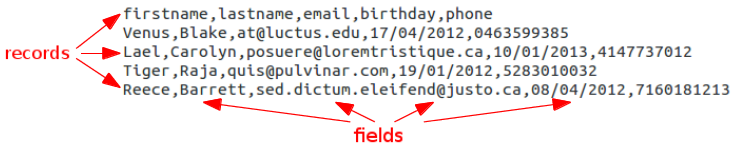
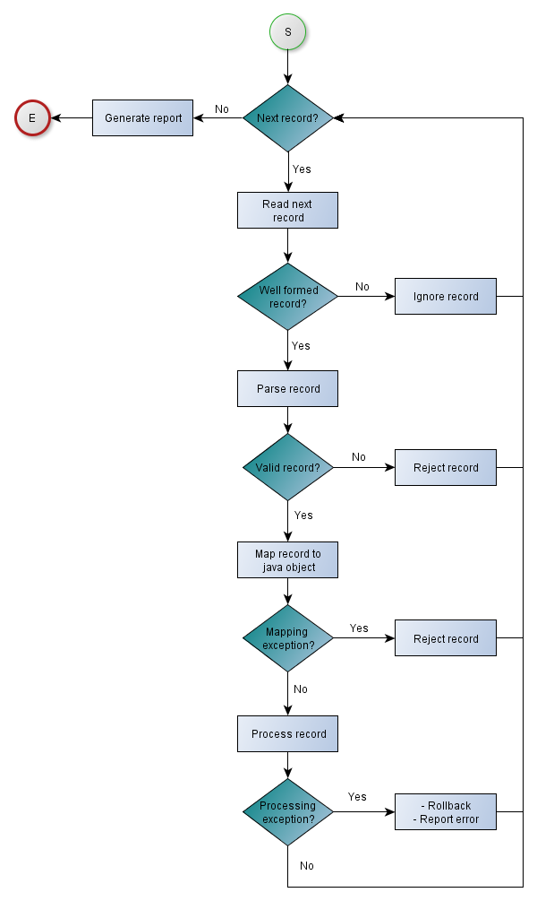

Architecture
1. CSV data model
CB4J uses a very simple and natural data model for dealing with CSV files. The main classes are :
Field: represents a field in a CSV record. A field has a content and an indexRecord: represents a CSV record as an ordered list of fields

These classes are defined innet.benas.cb4j.core.model package.
2. Main components
The next figure illustrates the main CB4J components and gives an overview of the framework architecture:

The main CB4J components are the following :
- Record Parser : parses a record and splits it into a list of fields
- Record Validator : applies declared validation rules for each record
- Record Mapper : maps a record to a Java object
- Record Processor : applies business processing logic for each record
Each of these components needs to be configured to work properly and as expected. CB4J uses a declarative approach to register configuration parameters. A typical use case of configuring CB4J is to :
- Provide CSV configuration parameters (Input file path, file encoding,field delimiter,etc)
- Register field validation rules (field size, data type and format,etc) that will be used by the record validator to validate data
- Register CSV to Object mapping logic that will be used by the record mapper
- Register record processing business logic that will be applied by the record processor
All details about these steps can be found in the user guide section.
The following table summarizes what you need to do and what CB4J does for you :
| Task | You | CB4J |
|---|---|---|
| Provide configuration parameters | ||
| Provide data validation logic | ||
| Provide CSV/Object mapping logic | ||
| Provide record processing logic | ||
| Handle I/O for input/log files | ||
| Read input file line by line | ||
| Check CSV record well-formedness | ||
| Parse CSV record and split it into a list of fields | ||
| Apply validation logic to each field/record | ||
| Apply CSV/Object mapping logic | ||
| Apply business processing logic | ||
| Report batch statistics | ||
| Generate log files for ignored/rejected records |
3. Processing workflow
The workflow used internally by CB4J is illustrated by the next figure and described below :

- The engine reads the input CSV file line by line until the end of file. If the end of file is reached, the engine generates the batch report and terminates the execution
- The next record is read as a string containing raw data
- The record parser checks the record for well-formedness : If the record is not well formed, then it is ignored and the engine moves to the next one. If the record is well formed, then it is passed to the next step to be parsed
- The record parser parses the current record to split it into fields ordered by index and containing raw data
- The record validator applies validation rules for each field. If a validation rule is violated for one field, then the record is rejected. If all fields are valid, then the parsed record is passed to the next step to be mapped to a Java object
- At this point, the record mapper is supplied with a parsed record containing raw data that have passed the declared validation rules. The parsed record is mapped to the declared Java object type. CB4J considers mapping exception as errors that should not pass the processing step. Hence, the engine rejects records that cannot be mapped to objects with typed fields. This is a design choice to minimize unexpected errors during record processing.
NB : In a well designed batch, the record mapper should not have any problem in converting string values to typed values if all data is validated correctly at validation step.
- Finally, the business logic is executed by the record processor. At this point, the record processor is supplied with a Java object populated with validated and typed data.